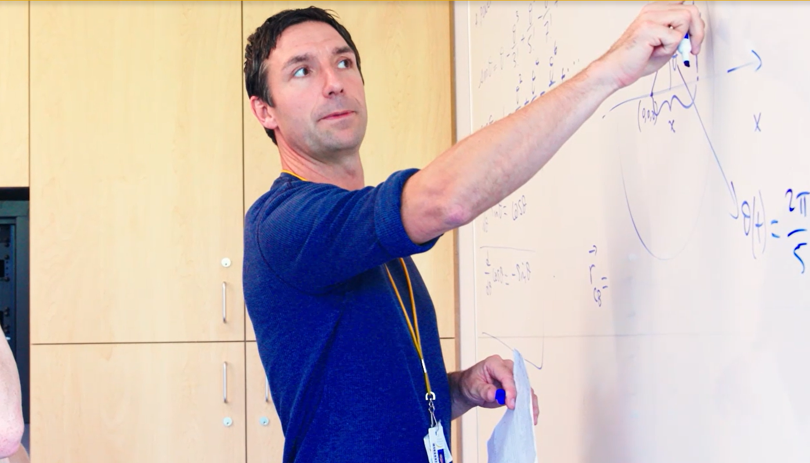

My favorite classes, ranked

-
European Revolutions in Thought: Shakespeare & The English Renaissance - This is my favorite class (so far) not because I love Shakespeare or the Renaissance, but because the class material has been very enjoyable (we got to watch
a movie!) and the teacher is really nice.
- Web Design 1 - I like this class because I think the process of writing code and then seeing how it shows up in a website is fun, and because I have a friend.
- European Revolutions in Thought: Renaissance to the Enlightenment - I like that we're taught not only about the Renaissance in Europe but also what happened during that time period outside of Europe. The teacher is also nice and lenient
with homework.
- Graphic Design 1 - I just like art classes in general because they're more freeform and hard to get a bad grade on, so its less stressful.
- Chemistry - The material and class itself isn't bad, it's actually pretty fun because I had a couple friends in it too, but the teacher grades really hard so its one of my most stressful classes.
- Pre-calculus - Math is stressful and hard and scary but there isn't a ton of homework and I have friends that are very good at math so it isn't super bad.
- Spanish 2 - I have such a hard time learning languages because my memory is terrible and on top of that Spanish is full of speaking and talking and I'm not close to anybody in it.